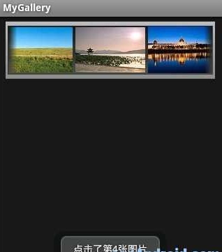
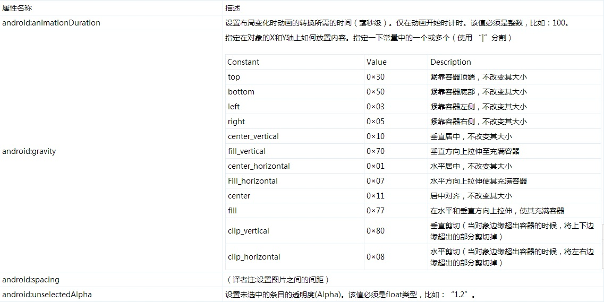

Android开发之gallery（画廊）
一、结构
public class Gallery extends AbsSpinner implements GestureDetector.OnGestureListener java.lang.Object android.view.View android.view.ViewGroup android.widget.AdapterView android.widget.AbsSpinner android.widget.Gallery
二、概述  一个锁定中心条目并且拥有水平滚动列表的视图。 Gallery（画廊）使用Theme_galleryItemBackground作为Gallery（画廊）适配器中的各视图的默认参数。如果你没有设置，你就需要调整一些Gallery（画廊）的属性，比如间距。 Gallery（画廊）中的视图应该使用Gallery.LayoutParams作为它们的布局参数类型。 参见Gallery tutorial。
三、内部类
class Gallery.LayoutParamsGallery(画廊)扩展了LayoutParams，以此提供可以容纳当前的转换信息和先前的位置转换信息的场所。
四、XML属性 
五、公共方法
public boolean dispatchKeyEvent (KeyEvent event)
在焦点路径上分发按钮事件到下一个视图。该路径从视图树的顶端遍历到当前获得焦点的视图。如果当前视图已获得焦点，就分发给自身。否则，就分发到下一个节点的焦点路径上。该方法监听任何按钮事件。 参数 event 被分发的按钮事件 返回值 时间被处理返回true，否则false
public void dispatchSetSelected (boolean selected)
分发setSelected给视图的子类。 参数 selected 新选中的状态
public ViewGroup.LayoutParams generateLayoutParams (AttributeSet attrs)
返回一个新的已设置属性集合的布局参数。 参数 attrs 用于生成布局参数的属性集合 返回值 一个ViewGroup.LayoutParams实例或者它的子类
public boolean onDown (MotionEvent e)
当轻击和按下手势事件发生时通知该方法。任何按下事件都会直接触发该方法。所有其他的事件都要先于该方法。 参数 e 按下动作事件
public boolean onFling (MotionEvent e1, MotionEvent e2, float velocityX, float velocityY)
当初始化的按下动作事件和松开动作事件匹配时通知fling（译者注：快滑，用户按下触摸屏、快速移动后松开）事件。该动作的速度通过计算X和Y轴上每秒移动多少像素得来。 参数 e1 导致开始fling的按下动作事件。 e2 触发当前onFling方法的移动动作事件 velocityX 测量fling沿X轴上的速度，像素/每秒 velocityY 测量fling沿Y轴上的速度，像素/每秒 返回值 如果该事件被消耗返回true，否则false。
public boolean onKeyDown (int keyCode, KeyEvent event)
处理左，右和点击事件 参数 keyCode 代表按下按钮的按键码，来自KeyEvent。 event 定义按钮动作的KeyEvent对象。 返回值 如果已经处理了按钮事件，则返回true。如果你想让下一个事件接收者处理，就返回false 参见 onKeyDown(int, KeyEvent)
public boolean onKeyUp (int keyCode, KeyEvent event)KeyEvent.Callback.onKeyMultiple()方法的默认实现：当KEYCODE_DPAD_CENTER 或者 KEYCODE_ENTER被释放时，执行点击视图操作。 参数 keyCode 代表按下按钮的按键码，来自KeyEvent。 event定义按钮动作的KeyEvent对象。 返回值 如果已经处理了按钮事件，则返回true。如果你想让下一个事件接收者处理，就返回false
public void onLongPress (MotionEvent e)MotionEvent初始化并按下触发长按并通知本方法。 参数 e 导致开始长按的初始按下动作事件。
public boolean onScroll (MotionEvent e1, MotionEvent e2, float distanceX, float distanceY)
当初始按下动作事件和当前移动动作事件导致滚动时通知本方法。为了方便提供了X和Y轴上的距离。 监听屏幕滚动事件。为了方便提供了X和Y轴上的距离。 参数 e1 导致滚动开始按下的动作事件。 e2 触发当前onScroll方法的移动动作事件。 distanceX 距离是自上一次调用onScroll方法在X轴上的距离。不是e1 和e2之间的距离。 distanceY 距离是自上一次调用onScroll方法在Y轴上的距离。不是e1 和e2之间的距离。 返回值 如果该事件被消耗返回true否则false
public void onShowPress (MotionEvent e)
用户已经执行按下动作还没有执行移动或者弹起动作。该事件常通过高亮一个元素来向用户提供一个视觉反馈即用户的操作已经被辨识了。 参数 e按下动作事件
public boolean onSingleTapUp (MotionEvent e)
在轻击动作和up动作事件触发时通知本方法。（译者注：点击屏幕上的某项的执行流程 有两种情况，一种是时间很短，一种时间稍长：时间很短：onDown―>onSingleTapUp―>onSingleTapConfirmed，见这里1，这里2。） 参数 e 完成开始轻击的up动作事件 返回值 如果该事件被消耗返回true否则false
public boolean onTouchEvent (MotionEvent event)
实现该方法来处理触摸屏动作事件 参数 event 动作事件 返回值 如果该事件被消耗返回true否则false
public void setAnimationDuration (int animationDurationMillis)
设置当子视图改变位置时动画转换时间。仅限于动画开始时生效。 参数 animationDurationMillis 动画转换时间（毫秒级）
public void setCallbackDuringFling (boolean shouldCallback)
当flinged时是否回调每一个getOnItemSelectedListener()。如果设为false，只回调最终选中的项。如果为true，则所有的项都会回调。 参数 shouldCallback 设置抛滑的过程中是否回调
public void setGravity (int gravity)
描述子视图的对齐方式。
public void setSpacing (int spacing)
设置Gallery中项的间距 参数 spacing Gallery中项的间距，以像素为单位
public void setUnselectedAlpha (float unselectedAlpha)
设置Gallery中未选中项的透明度(alpha)值。 参数 unselectedAlpha 未选中项的透明度(alpha)值
public boolean showContextMenu ()
显示该视图上下文菜单。 返回值 上下文菜单是否显示。
public boolean showContextMenuForChild (View originalView)
为指定的视图或者其父类显示上下文菜单。 大部分情况下，子类不需要重写该方法。但是，如果子类被直接添加到窗口管理器（例如：addView(View.android.view.ViewGroup.LayoutParams)），此时就需要重写来显示上下文菜单 参数 originalView 上下文菜单初次调用的源视图 返回值 如果上下文菜单被显示了 则返回true。
六、受保护方法
protected int computeHorizontalScrollExtent ()
在水平范围内计算滚动条滑块的滚动范围。该值用来计算滚动条滑块的长度。 该范围可以使用任意的单位但是必须跟computeHorizontalScrollRange()和computeHorizontalScrollOffset()的单位保持一致。 默认范围是视图的宽度。 返回值 滚动条滑块的水平滚动范围
protected int computeHorizontalScrollOffset ()在水平范围内计算滚动条滑块的偏移量。该值用来计算水平滑块的位置。 该范围可以使用任意的单位但是必须跟computeHorizontalScrollRange()和computeHorizontalScrollExtent()的单位保持一致。 默认偏移量是视图的偏移量。 返回值 滚动条滑块的水平偏移量。
protected int computeHorizontalScrollRange ()
计算滚动条水平方向上的滚动范围。 该范围可以使用任意的单位但是必须跟computeHorizontalScrollExtent()和computeHorizontalScrollOffset()的单位保持一致。 返回值 水平滚动条代表的滑动总范围
protected void dispatchSetPressed (boolean pressed)
分发 setPressed到View的子类。 参数 pressed 新按下的状态
protected ViewGroup.LayoutParams generateDefaultLayoutParams ()
返回默认的布局参数。当View作为参数传递给addView(View)而没有布局参数时就会请求这些参数。如果返回null，则addView会抛出异常。 返回值 默认的布局参数或null
protected ViewGroup.LayoutParams generateLayoutParams (ViewGroup.LayoutParams p)返回一组合法的受支持的布局参数。当把ViewGroup传递给View而该View的布局参数并没有通过checkLayoutParams(android.view.ViewGroup.LayoutParams)的测试时，就会调用该方法。该方法应该返回一组适合该ViewGroup的新的布局参数，该过程可能需要从指定的一组布局参数中复制相关的属性。 参数 p 被转换成适合该ViewGroup的一组参数。 返回值 返回一个ViewGroup.LayoutParams的实例或者一个它的子类。
protected int getChildDrawingOrder (int childCount, int i)
返回迭代的绘制子类索引。如果你想改变子类的绘制顺序就要重写该方法。默认返回 i 值。 提示：为了能够调用该方法，你必须首先调用setChildrenDrawingOrderEnabled(boolean)来允许子类排序。 参数 childCount 子类个数 i 当前迭代顺序 返回值 绘制该迭代子类的索引
protected boolean getChildStaticTransformation (View child, Transformation t)（译者注：setStaticTransformationsEnabled这个属性设成true的时候每次viewGroup(看Gallery的源码就可以看到它是从ViewGroup间接继承过来的)在重新画它的child的时候都会促发getChildStaticTransformation这个函数。这里1、这里2）
protected ContextMenu.ContextMenuInfo getContextMenuInfo()Views如果有额外的信息跟上下文菜单有联系的话就需要实现该方法。返回的结果被用作回调方法onCreateContextMenu(ContextMenu, View, ContextMenuInfo)的参数。 返回值 显示上下文菜单的条目的额外信息。这些信息将会改变View不同的子类
protected void onFocusChanged (boolean gainFocus, int direction, Rect previouslyFocusedRect)当该视图的焦点状态发生改变时将会调用视图系统。当导向的方向触发焦点事件时，方向和先前获得焦点的矩形提供焦点事件的来源。当用户重写该方法，必须调用父类方法来触发标准的焦点处理事件。 参数 gainFocus 如果View获得焦点为true，否则false direction 当调用requestFocus()方法来给该视图焦点时焦点的移动方向。该值:FOCUS_UP, FOCUS_DOWN, FOCUS_LEFT 或 FOCUS_RIGHT。该参数不常用，通常使用它的默认值。 previouslyFocusedRect 该视图坐标系统中先前获得焦点的视图的矩形。如果适用，这将获得焦点事件来源的更细致的信息（除了方向以外）。否则为null。
protected void onLayout (boolean changed, int l, int t, int r, int b)
当视图为每一个子类分配大小和位置时从布局中调用该方法。有子类的派生类应该重写该方法在子类中调用布局。 参数 changed 该视图新的大小和位置。 l 相对父容器的左侧位置 t 相对父容器的顶部位置 r 相对父容器的右侧位置 b 相对父容器的底部位置七、补充 文章精选 Android开发――使用Gallery实现“多级联动” android 图片拖动效果(Gallery) 示例代码
public class MyGallery extends Activity {
/** Called when the activity is first created. */
private Gallery gallery;
@Override
public void onCreate(Bundle savedInstanceState) {
super.onCreate(savedInstanceState);
setContentView(R.layout.main);
gallery = (Gallery) findViewById(R.id.gallery);
gallery.setAdapter(new ImageAdapter(this));// 设置图片适配器
// 设置监听器
gallery.setOnItemClickListener(new OnItemClickListener() {
@Override
public void onItemClick(AdapterView<?> arg0, View arg1, int arg2,
long arg3) {
Toast.makeText(MyGallery.this, "点击了第" + arg2 + "张图片",
Toast.LENGTH_LONG).show();
}
});
}
}
class ImageAdapter extends BaseAdapter {
private Context context;
// 图片源数组
private Integer[] imageInteger = { R.drawable.gallery_photo_1,
R.drawable.gallery_photo_2, R.drawable.gallery_photo_3,
R.drawable.gallery_photo_4, R.drawable.gallery_photo_5,
R.drawable.gallery_photo_6, R.drawable.gallery_photo_7,
R.drawable.gallery_photo_8 };
public ImageAdapter(Context c) {
context = c;
}
@Override
public int getCount() {
return imageInteger.length;
}
@Override
public Object getItem(int position) {
return position;
}
@Override
public long getItemId(int position) {
return position;
}
@Override
public View getView(int position, View convertView, ViewGroup parent) {
ImageView imageView = new ImageView(context);
imageView.setImageResource(imageInteger[position]);
imageView.setScaleType(ImageView.ScaleType.FIT_XY);
imageView.setLayoutParams(new Gallery.LayoutParams(136, 88));
return imageView;
}
}
XML文件
<?xml version="1.0" encoding="utf-8"?>
<Gallery xmlns:android="http://schemas.android.com/apk/res/android
android:id="@+id/gallery
android:layout_width="fill_parent
android:layout_height="wrap_content
android:background="?android:galleryItemBackground
android:gravity="center_vertical" />